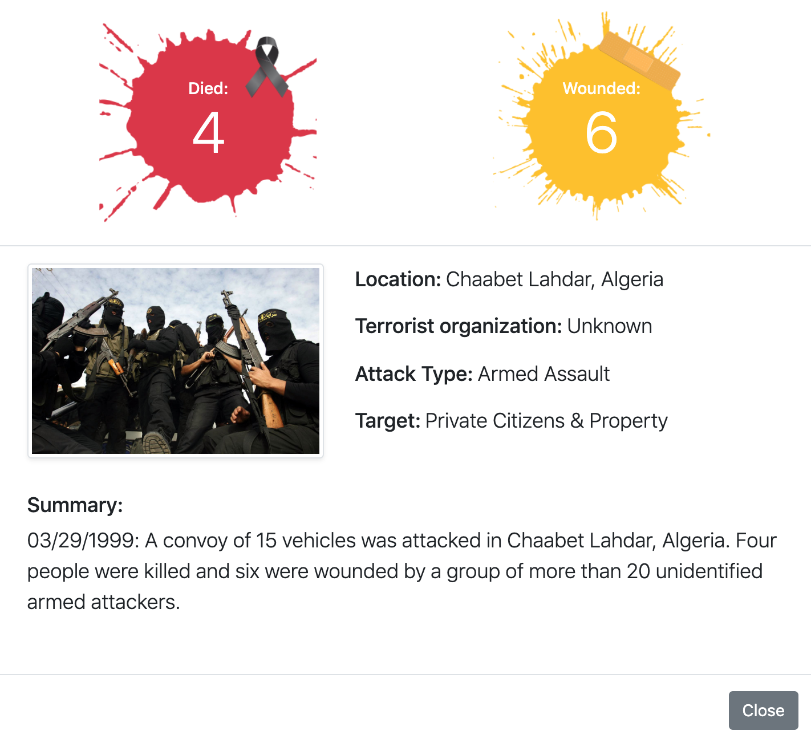
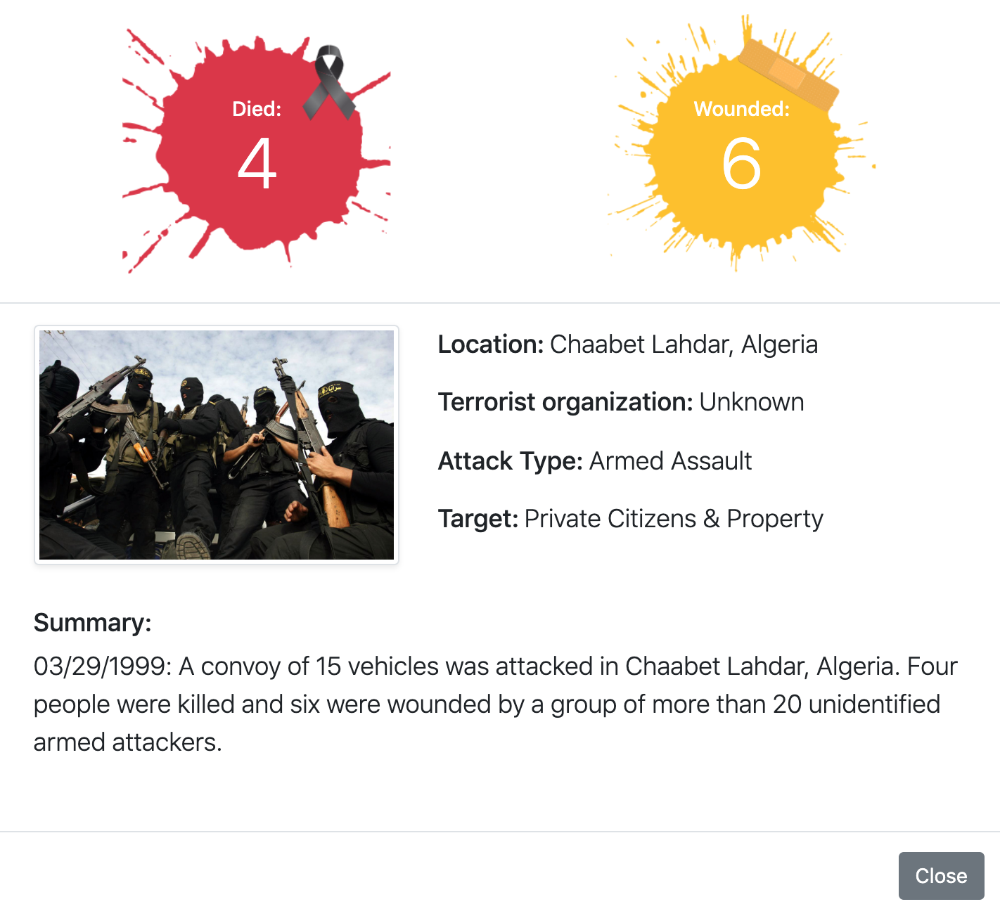

Overview and Motivation
Our visualization aims to help illuminate how terrorist attacks changed over the years, in addition to showing any trends that may appear. This is especially relevant considering different current events all over the world brought to light by modern social media and digital outlets. We recognize that this is a serious and sensitive topic that deserves to be analyzed, and wish to display the data in a neutral unbiased light without sensationalist purposes.
Source: https://www.cnn.com/2019/03/15/asia/new-zealand-christchurch-attack-what-we-know-intl/index.html
Related Work
There are a number of different sources that provided inspiration to this project. The visualizations themselves were heavily inspired by some previous studio work involving mercator maps, as well as a previous assignment that dealt with showing political leanings across the different states of the USA. In addition, a visualization linked from from database used influenced several decisions made: https://www.start.umd.edu/gtd/.
Questions
Some questions we are trying to answer are what are some of the trends involving global terrorism attacks? Have the frequency of such attacks increased over the last couple of years? How have certain factors influenced such attacks? These questions have evolved over the project as we started to hone into what available data was available to us, as well as how much of the data we could process reasonably over the timespan of this project. For example, we started to notice how a vast majority of the terrorist attacks were of a smaller magnitude in comparison with the largest attacks which made the information more difficult to display on the map. This lead to the question of if most terrorist attacks are of those with smaller, unconnected backgrounds rather than solely dominated by large well known groups with a clear agenda. There were also a surprising number of countries with no recorded terrorist attacks at all, which made us wonder if this was due to lack of information from our chosen data set rather than there is actually no attacks in those areas.
Data
We retrieved our data from https://www.kaggle.com/START-UMD/gtd, then proceeded to process it both through Javascript and by manual cleanup in order to mold it into a usable format. We also utilized some available topojson and geo json for dividing up the maps by country.
Exploratory Data Analysis
We initially went with a main map view with plainly plotted points representing where each terrorist attack took place. We were able to then observe how these points changed over the years. In order to add more information to our visualization, we then added scaling and colors, in addition to additional views. Some insights we gained were that we needed to use log scaling instead of linear scaling since the discrepancy between the number of attacks with smaller casualty numbers greater outweighed those with larger numbers of casualties. We also lacked visualizations to show general overviews by country, which we later added.
Design Evolution
Some different visualizations we considered were dynamic block charts, connected force charts, and many different variations of our final map based visualization (These can be viewed below). Our final design choices were made with the goal of displaying our data in the more efficient and clear way possible while at the same time making it interactive and dynamic. The user is able to choose a range of time in years or a single year to display data pertaining to those specific years, not unlike the brushing feature we implemented in class before. The user can also select a single country to get a summary of the data for that specific place. In addition, The color scheme was chosen to furthermore illuminate the differences in severity of each attack, and was labeled using a dynamic legend which redraws every time the slider is changed. Lastly, tool tips and additional visualizations (a bar chart and a bubble chart) were implemented to give the viewer another point of view for the data.
Sketches and Screenshots
Sketches: World Map with supplementary graphs


Final Design

Milestone 1: Prototype
 

Milestone 2: Refinement and Additional Views
Implementation
Our final visualization can be broken down into several parts: (1) Main map view (2) Country Zoom view (3) Bar chart (4) Line chart (5) Interactive bubble chart. Corresponding images can be seen in the sketches and screenshots section of this process book above. The main map view serves to give an overview of recorded terrorist attacks in regards to the selected years, which can be manipulated by the user. The main map also implements tool tips, and each bubble can be selected to give a more detailed profile of that specific attack. The country zoom gives a closer, more detailed, summarized look into each country's attack record. The bar chart and line charts give additional perspectives on all of the data in a dynamic animated manner. Lastly, the interactive bubble chart allows the user to interact with the visualization, while displaying the information in the end.
User Testing and Results
Here were several suggestions made during the final round of user testing: (1) Add list modal view to places with more than one attack (2) A little confusing that circle radius indicates casualty number instead of total number of attacks in the region (3) Move supplementary charts tab and add map to somewhere more obvious (4) Perhaps add more map info (dotted lines for territory borders, etc)
In regards to time, we have discussed implementing several of these changes while keeping other original implementations based on priority. For example, we have looked into adding a loading icon in order to notify the user when the visualization has finished loading all the data (which is a lot!). Several typos and title changes were also implemented, along with several placement shifts due to the feedback we got.
Evaluation
Using our visualizations, we learned that in terms of number of events, most terrorist attacks in recent years were in fact committed by religious or military groups, with one of the largest attacks being that of 9/11. Also, although the number of individual attacks seemed to have steadily increased over the years, the total number of casualties have fluctuated quite a bit. We also should be wary about the accuracy of our data in terms of missing entries, especially in earlier years. Our data could very be missing many attacks versus the reporting power that improved technology has offered us today. So overall, although there is the possibility of missing data, our visualization does serve to answer our original questions adequately.
Now a way that this visualization could further improve would be if the data set contained even greater information about attacks in years prior to 1970. This is since although Islamic terrorist groups are seen as a major perpetrator recently, there have been differing trends in the past in regards to the current events of those times. The maps could also be more detailed, with the possibility of adding capitals or border paths, which have in fact changed as countries split and merged. The map could even be translated into using an API such as Mapbox, which is also utilized by apps such as Snapchat and Facebook.